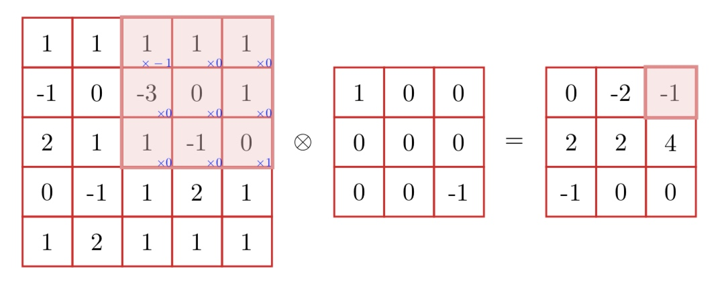
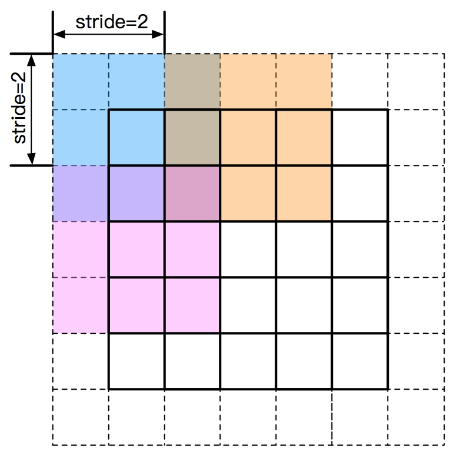

卷积神经网络是一种局部连接、权重共享等特性的深层前馈神经网络。卷积神经网络最早是主要用来处理图像信息。如果用全连接来处理图像信息时，会出现几个问题
1）参数太多。假设一个100 * 100 * 3的图像（高100，宽100,RGB）。在全连接前馈网络中，隐藏层的每一个神经元到输入层的连接有 100 * 100 * 3 = 30000个连接，每个连接对应一个权重参数。随着隐藏层神经元的增多，参数规模会急剧增加。参数过多，也会很容易产生过拟合。
2）局部不变性：自然图像中的物体具有局部不变特性，比如在尺度缩放、平移、旋转等操作不影响其语义信息。而全连接前馈网络很难提取这些局部不变特征，一般需要进行数据增强来提高性能。
那么，卷积神经网络又是怎样解决这个问题的呢？主要有三个思路：
1）局部连接：这个是最容易想到的，每个神经元不再和上一层的所有神经元相连，而只和一小部分神经元相连。这样就减少了很多参数。
2）权值共享：一组连接可以共享同一个权重，而不是每个连接有一个不同的权重，这样又减少了很多参数。
3）下采样：可以使用Pooling来减少每层的样本数，进一步减少参数数量，同时还可以提升模型的鲁棒性。
卷积神经网络主要使用在图像和视频分析的各种任务上，比如图像分类、人脸识别、物体识别、图像分割等，其准确率一般也远远超出了其它的神经网络模型。近年来卷积神经网络也广泛地应用到自然语言处理、推荐系统等领域。
卷积
卷积是一种重要的运算。在信号处理或图像处理中，经常使用一维或二维卷积。
一维卷积
一维卷积常用于序列模型，自然语言处理领域。一维卷积指的是卷积核是1维的，而不是卷积的输入是1维的。假设一个信号发生器每个时刻 \(t\) 产生一个信号 \(x_t\)，其信息的衰减率为 \(w_k\)，即在 \(k−1\) 个时间步长后，信息为原来的 \(w_k\) 倍。假设 \(w_1=1\),\(w_2 =1/2\),\(w_3 =1/4\)，那么在时刻 \(t\) 收到的信号 \(y_t\) 为当前时刻产生的信息和以前时刻延迟信息的叠加，
\[
\begin{align*}
y_t &= 1\times x_t +1/2\times x_{t−1} + 1/4\times x_{t−2}\\
&= w_1 \times x_t +w_2 \times x_{t−1} + w_3 \times x_{t−2}\\
&= \sum^3_{k=1} w_k \cdot x_{t−k+1}\\
\end{align*}
\]
我们假设卷积核（滤波器）为 \(\mathbf w = (w_1,...,w_{m})\)，长度为 \(m\) ，它和一个信号序列 \(x_1,...\) 的卷积为
\[
y_t = \sum_{k=1}^{m} w_k x_{t-k+1}
\]
信号序列 \(\mathbf x\) 与滤波器 \(\mathbf w\) 的卷积定义为
\[
y = \mathbf w \otimes \mathbf x
\]
其中 \(\otimes\) 表示卷积操作。
假设如下图，图中的输入的数据维度为8，卷积核的维度为5，卷积步数为1时，卷积后输出的数据维度为8−5+1=4。卷积核为 \((0,1,1,2,-1)\)，输入信号为 \((1,1,2,-1,1,-1,2,1)\)，卷积为
\[
\begin{align*}
y_0 &= \sum_{k=1}^5 w_k x_{1-k} = w_1 x_1 + w_2 x_0 + w_3 x_{-1} + w_4 x_{-2} + w_5 x_{-3} \\
&= 0 \times 1 + 1 \times (-1) + 1 \times 2 + 2 \times 1 + (-1) \times 1 \\
&= 0 - 1 + 2 + 2 - 1 \\
&= 2\\
y_1 &= \sum_{k=0}^4 w_k x_{5-k} = w_0 x_5 + w_1 x_4 + w_2 x_3 + w_3 x_2 + w_4 x_1 \\
&= 0 \times (-1) + 1 \times 1 + 1 \times (-1) + 2 \times 2 + (-1) \times 1 \\
&= 0 + 1 -1 + 4 - 1\\
&= 3\\
y_2 &= \sum_{k=0}^4 w_k x_{6-k} = w_0 x_6 + w_1 x_5 + w_2 x_4 + w_3 x_3 + w_4 x_2 \\
&= 0 \times 2 + 1 \times (-1) + 1 \times 1 + 2 \times (-1) + (-1) \times 2\\
&= 0 - 1 + 1 - 2 - 2\\
&= -4\\
y_3 &= \sum_{k=0}^4 w_k x_{7-k} = w_0 x_7 + w_1 x_6 + w_2 x_5 + w_3 x_4 + w_4 x_3 \\
&= 0 \times 1 + 1 \times 2 + 1 \times (-1) + 2 \times 1 + (-1) \times (-1)\\
&= 0 + 2 - 1 + 2 + 1\\
&= 4\\
\end{align*}
\]
我们可以简单的进行用图表示，先将卷积核反转，然后挨个与信号相乘，结果求和即可，如下：
二维卷积
二维卷积常用语图像识别等领域。因为图像为一个两维结构，所以需要将一维卷积进行扩展。给定一个图像 \(X \in \mathbb R^{M\times N}\)，和滤波器 \(W \in \mathbb R^{m\times n}\)，一般 \(m \le M,n\le N\)，其卷积为
\[
y_{ij} = \sum_{u=1}^{m} \sum_{v=1}^{n} w_{uv}\cdot x_{i-u+1,j-v+1}
\]
下图给出了二维卷积示例。

\[
\begin{align*}
y_{13} &= \sum_{u=1}^3 \sum_{v=1}^3 w_{uv} \cdot x_{1-u+1,3-v+1} = \sum_{u=1}^3\sum_{v=1}^3 w_{uv} x_{2-u,4-v}\\
&= w_{11} x_{13} + w_{12} x_{12} + w_{13} x_{11} \\
&+ w_{10} x_{14} + w_{11} x_{13} + w_{12} x_{12} \\
&+ w_{20} x_{04} + w_{21} x_{03} + w_{22} x_{02} \\
&= 1 \times 0 + 0 \times (-1) + 0 \times 1 \\
&+ 0 \times 1 + 0 \times 0 + 0 \times (-3) \\
&+ 0 \times 1 + 0 \times 1 + (-1) \times 1 \\
&= -1\\
\end{align*}
\]
在图像处理中，卷积经常作为特征提取的有效方法。一幅图像在经过卷积操作后得到结果称为特征映射(feature map)。图给出在图像处理中几种常用的滤波器，以及其对应的特征映射。图中最上面的滤波器是常用的高斯滤波器，可以用来对图像进行平滑去噪;中间和最下面的过滤器可以用来提取边缘特征。
互相关
在机器学习和图像处理领域，卷积的主要功能是在一个图像（或某种特征）上滑动一个卷积核（即滤波器），通过卷积操作得到一组新的特征。在计算卷积的过程中，需要对卷积核翻转。在具体实现上，一般会以互相关操作来代替卷积，从而减少一些不必要的操作和开销。互相关是衡量两个序列相关性的函数，通常是滑动卷口的点击运算来实现的。给定一个图像 \(X\in \mathbb R^{M\times N}\) 和卷积核 \(W\in\mathbb R^{m\times n}\)，它们的互相关为
\[
\begin{align}
y_{ij} = \sum_{u=1}^m \sum_{v=1}^n w_{uv} x_{i+u-1,j+v-1}\label{yijs}\\
\end{align}
\]
和卷积相比，互相关的区别在于卷积核是否进行了翻转，也可以理解为图像是否进行翻转。因此互相关也可以被称为不翻转卷积。
在神经网络中使用卷积是为了进行特征抽取，卷积核是否进行了翻转和其特征抽取无关。特别是当卷积核是可学习的参数时，卷积核互相关是等价的。一次，为了实现上的方便起见，我们用互相关来代替卷积。事实上，很多深度学习工具中卷积操作都是互相关操作。
公式 ( \ref{yijs} )可以表述为
\[
Y = W \otimes X
\]
其中 \(Y\in \mathbb R^{M-m+1,N-n+1}\) 为输出矩阵。
卷积的变种
在卷积的标准定义基础上，还可以引入滤波器的滑动步长和零填充来增加卷积的多样性，可以更灵活地进行特征抽取。
滑动步长（stride）：卷积核在滑动时的间隔。下图给出了步长为2的二维卷积示例。
零填充（zero padding）：输入两端进行补零。因为步长的设置问题，可能导致剩下未扫描的空间不足以提供给卷积核，比如有图大小为5 * 5,卷积核为2 * 2,步长为2,卷积核扫描了两次后，剩下一个元素，不够卷积核扫描了，这个时候就需要补零。更一般地，假设卷积层的输入神经元个数为 \(n\)，卷积大小为 \(m\)，步长（stride）为 \(s\)，输入神经元两端各填补 \(p\) 个零（zero padding），那么该卷积层的神经元数量为 \((n − m + 2p)/s + 1\)。

一般常用的卷积有以下三类：
- 窄卷积（narrow convolution）：步长 \(s=1\)，两端不补零 \(p=0\)，卷积后输出长度为 \(n-m+1\)。
- 宽卷积（wide convolution）：步长 \(s=1\)，两端补零 \(p=m-1\)，卷积后的长度为 \(n+m-1\)。
- 等长卷积（equal-width convolution）：步长 \(s=1\)，两端补零 \(p=(m-1)/2\)，卷积后输出长度为 \(n\)。
这里的窄、宽、等长指的都是卷积后与卷积前的大小比较。
卷积的数学性质
卷积有很多很好的数学性质，这些性质不止是二维卷积，也可以适用到一维卷积的情况。
交换性
如果不限制两个卷积信号的长度，卷积是具有交换性的，即 \(x\otimes y = y \otimes x\)。当输入信息和卷积核有固定长度时，它们的宽卷积依然具有交换性。对于两维图像 \(X \in \mathbb R^{M×N}\) 和卷积核 \(W \in \mathbb R^{m×n}\)，对图像 \(X\) 的两个维度进行零填充，两端各补 \(m-1\) 和 \(n-1\) 个零，得到全填充（full padding）的图像 \(\widetilde X\in\mathbb R^{(M+2m−2)\times(N+2n−2)}\)。图像 \(X\) 和卷积核 \(W\) 的宽卷积（wide convolution）定义为
\[
W \widetilde \otimes X \buildrel \Delta \over = W \otimes \widetilde X
\]
其中 \(\widetilde \otimes\) 为宽卷积操作。
宽卷积具有交换性，即
\[
W \widetilde \otimes X = X \widetilde \otimes W
\]
可以用一个简单的例子来看看这个交换操作。
导数
假设 \(Y=W\otimes X\)，其中 \(X \in \mathbb R^{M\times N}\)，\(W\in \mathbb R^{m\times n}\)，\(Y \in \mathbb R^{(M-m+1)\times (N-n+1)}\)，函数 \(f(Y) \in \mathbb R\) 为一个标量函数，则
\[
\begin{align*}
\frac{\partial f(Y)}{\partial w_{uv}} &= \sum_{i=1}^{M-m+1} \sum_{j=1}^{M-m+1} \frac{\partial f(Y)}{\partial y_{ij}}\frac{\partial y_{ij}}{\partial w_{uv}}\\
&= \sum_{i=1}^{M-m+1} \sum_{j=1}^{M-m+1} \frac{\partial f(Y)}{\partial y_{ij}}\frac{\partial}{\partial w_{uv}} \Big(\sum_{u=1}^m \sum_{v=1}^n w_{uv} x_{i+u-1,j+v-1}\Big)\\
&= \sum_{i=1}^{M-m+1} \sum_{j=1}^{M-m+1} \Big(\frac{\partial f(Y)}{\partial y_{ij}}\Big) x_{i+u-1,j+v-1}\\
\end{align*}
\]
上式可以看出， \(f(Y)\) 关于 \(W\) 的偏导数为 \(X\) 和 \(\frac{\partial f(Y)}{\partial Y}\) 的卷积
\[
\begin{equation}
\frac{\partial f(Y)}{\partial W} = \frac{\partial f(Y)}{\partial Y} \otimes X\\\label{fpfyp}
\end{equation}
\]
同理可得
\[
\begin{align}
\frac{\partial f(Y)}{\partial x_{st}} &= \sum_{i=1}^{M-m+1} \sum_{j=1}^{N-n+1} \frac{\partial y_{ij}}{\partial x_{st}}\frac{\partial f(Y)}{\partial y_{ij}}\nonumber\\
&= \sum_{i=1}^{M-m+1} \sum_{j=1}^{N-n+1} w_{s-i+1,t-j+1} \frac{\partial f(Y)}{\partial y_{ij}}\label{fpsmi}\\
\end{align}
\]
其中当 \((s-i+1) \lt 1\)，或 \((s-i+1) \gt m\)，或 \((t-j+1) \lt 1\)，或 \((t - j + 1) \gt n\) 时， \(w_{s-i+1,t-j+1} = 0\)。即相当于对 \(W\) 进行了 \(p = (M - m, N - n)\) 的零填充。
从公式 \(( \ref{fpsmi} )\) 可以看出， \(f(Y)\) 关于 \(X\) 的偏导数为 \(W\) 和 \(\frac{\partial f(Y)}{\partial Y}\) 的宽卷积。公式 ( \ref{fpsmi} ) 中的卷积是真正的卷积而不是互相关，为了一致性，我们用互相关的“卷积”，即
\[
\begin{align*}
\frac{\partial f(Y)}{\partial X} &= \mathbf{rot180}(\frac{f(Y)}{\partial Y})\widetilde \otimes W\\
&=\mathbf{rot180}(W)\widetilde \otimes \frac{\partial f(Y )}{\partial Y}\\
\end{align*}
\]
其中 \(\mathbf{rot180}(\cdot)\) 表示旋转 180度。
卷积神经网络
卷积神经网络一般由卷积层、池化层和全连接层构成。
用卷积来代替全连接
在全连接前馈神经网络中，如果第 \(l\) 层有 \(n^{(l)}\) 个神经元，第 \(l-1\) 层有 \(n^{(l−1)}\) 个神经元，连接边有 \(n^{(l)} \times n^{(l−1)}\) 个，也就是权重矩阵有 \(n^{(l)} \times n^{(l−1)}\) 个参数。此时权重矩阵的参数非常多，训练的效率会非常低。
如果采用卷积来代替全连接，第 \(l\) 层的净输入 \(\mathbf z(l)\) 为第 \(l-1\) 层活性值 \(\mathbf a(l−1)\) 和滤波器 \(\mathbf w^{(l)} \in \mathbb R^m\) 的卷积，即
\[
\begin{equation}
\mathbf z^{(l)} = \mathbf w^{(l)} \otimes \mathbf a^{(l−1)} + b^{(l)}\label{mzlm}\\
\end{equation}
\]
其中滤波器 \(\mathbf w^{(l)}\) 为权重向量， \(b^{(l)} \in \mathbb R^{n^{l−1}}\) 为偏置。
根据卷积的定义，卷积层有两个很重要的性质：
- 局部连接：在卷积层（假设是第 \(l\) 层）中的每一个神经元都只和下一层（第 \(l-1\) 层）中某个局部窗口内的神经元相连，构成一个局部连接网络。如下右图所示，卷积层和下一层之间的连接数大大减少，有原来的 \(n^{(l)} \times n^{(l−1)}\) 个连接变为 \(n^{(l)} \times m\) 个连接，\(m\) 为滤波器大小。
- 权重共享：从公式 ( \ref{mzlm} )可以看出，作为参数的滤波器 \(w^{(l)}\) 对于第 \(l\) 层的所有的神经元都是相同的。如下右图中，所有的同颜色连接上的权重是相同的。
由于局部连接和权重共享，卷积层的参数只有一个 \(m\) 维的权重 \(w^{(l)}\) 和 1 维的偏置 \(b^{(l)}\)，共 \(m+1\) 个参数。参数个数和神经元的数量无关。此外，第 \(l\) 层的神经元个数不是任意选择的，而是满足
\[
n^{(l)} = n^{(l−1)} − m + 1。
\]
卷积层
卷积层的作用是提取一个局部区域的特征，不同的卷积核相当于不同的特征提取器。上面描述的卷积层的神经元和全连接网络一样都是一维结构。既然卷积网络主要应用在图像处理上，而图像为两维结构，因此为了更充分地利用图像的局部信息，通常将神经元组织为三维结构的神经层，其大小为高度 \(M\) \(\times\) 宽度 \(N\) \(\times\) 深度 \(D\)，有 \(D\) 个 \(M \times N\) 大小的特征映射构成。
特征映射（feature map）为一幅图像（或其它特征映射）在经过卷积提取到的特征，每个特征映射可以作为一类抽取的图像特征。为了卷积网络的表示能力，可以在每一层使用多个不同的特征映射，以更好地表示图像的特征。
在输入层，特征映射就是图像本身。如果是灰度图像，就是有一个特征映射，深度 \(D = 1\)；如果是彩色图像，分别有 RGB 三个颜色通道的特征映射，输入层深度 \(D = 3\)。
不失一般性，假设一个卷积层的结构如下：
- 输入特征映射组： \(\mathbf X \in \mathbb R^{M\times N\times D}\) 为三维张量（tensor），其中每个切片(slice )矩阵 \(X^d \in \mathbb R^{M\times N}\) 为一个输入特征映射， \(1 \le d \le D\)；
- 输出特征映射组： \(\mathbf Y \in \mathbb R^{M' \times N' \times P}\) 为三维张量，其中每个切片矩阵 \(Y^p \in \mathbb R^{M' \times N'}\) 为一个输出特征映射， \(1 \le p \le P\)；
- 卷积核： \(\mathbf W \in \mathbb R^{m\times n\times D\times P}\) 为四维张量，其中每个切片矩阵 \(W^{p,d} \in \mathbb R^{m×n}\) 为一个两维卷积核， \(1 \le d \le D\), \(1 \le p \le P\)。
为了计算输出特征映射 \(Y^p\)，用卷积核 \(W^{p,1}\), \(W^{p,2}\),\(...\), \(W^{p,D}\) 分别对输入特征映射 \(X^1, X^2,..., X^D\) 进行卷积，然后将卷积结果相加，并加上一个标量偏置 \(b\) 得到卷积层的净输入 \(Z^p\)，再经过非线性激活函数后得到输出特征映射 \(Y^p\)。
\[
Z^p = \mathbf W^p \otimes \mathbf X + b^p = \sum^D_{d=1} W^{p,d} \otimes X^d + b^p\\
Y^p = f(Z^p)
\]
其中 \(\mathbf W^p \in \mathbf R^{m\times n\times D}\) 为三维卷积核， \(f(\cdot)\) 为非线性激活函数，一般用 ReLU 函数。整个计算过程如下图所示。如果希望卷积层输出 \(P\) 个特征映射，可以将上述计算机过程重复 \(P\) 次，得到 \(P\) 个输出特征映射 \(Y^1, Y^2,..., Y^P\)。
在输入为 \(\mathbf X \in \mathbb R^{M\times N\times D}\)，输出为 \(\mathbf Y \in \mathbb R^{M' \times N' \times P}\) 的卷积层中，每一个输入特征映射都需要 \(D\) 个滤波器以及一个偏置。假设每个滤波器的大小为 \(m \times n\)，那么共需要 \(P \times D \times (m\times n) + P\) 个参数。
池化层
池化层（pooling layer）也叫子采样层（subsampling layer），其作用是进行特征选择，降低特征数量，并从而减少参数数量。卷积层虽然可以显著减少网络中连接的数量，但特征映射组中的神经元个数并没有显著减少。如果后面接一个分类器，分类器的输入维数依然很高，很容易出现过拟合。为了解决这个问题，可以在卷积层之后加上一个池化层，从而降低特征维数，避免过拟合。减少特征维数也可以通过增加卷积步长来实现。
假设池化层的输入特征映射组为 \(\mathbf X \in \mathbb R^{M\times N\times D}\)，对于其中每一个特征映射 \(X^d\)，将其划分为很多区域 \(R^d_{m,n}\), \(1 \le m \le M'\), \(1 \le n \le N'\)，这些区域可以重叠，也可以不重叠。池化 (pooling)是指对每个区域进行下采样（down sampling）得到一个值，作为这个区域的概括。
常用的池化函数有两种：
最大池化（maximum pooling）：一般是取一个区域内所有神经元的最大值。
\[
Y^d_{m,n} = \max_{i \in R^d_{m,n}} x_i
\]
其中 \(x_i\) 为区域 \(R_k^d\) 内每个神经元的激活值。
平均池化（mean pooling）：一般是取区域内所有神经元的平均值。
\[
Y^d_{m,n} = \frac{1}{|R^d_{m,n}|} \sum_{i\in R^d_{m,n}} x_i
\]
对每一个输入特征映射 \(X^d\) 的 \(M' \times N'\) 个区域进行子采样，得到汇聚层的输出特征映射 \(Y^d = \{Y_{m,n}^d \}\), \(1 \le m \le M'\) , \(1 \le n \le N'\)。
池化层不但可以有效地减少神经元的数量，还可以使得网络对一些小的局部形态改变保持不变性，并拥有更大的感受野。
目前主流的卷积网络中，池化层仅包含下采样操作。但在早期的一些卷积网络（比如 LeNet-5）中，有时也会在池化层使用非线性激活函数，比如
\[
Y'^d = f(w^d \cdot Y^d + b^d)
\]
其中 \(Y'^d\) 为池化层的输出， \(f(\cdot)\) 为非线性激活函数， \(w^d\) 和 \(b^d\) 为可学习的标量权重和偏置。
典型的池化层是将每个特征映射划分为2 ×2大小的不重叠区域，然后使用最大池化的方式进行下采样。池化层也可以看做是一个特殊的卷积层，卷积核大小为 \(m \times m\)，步长为 \(s \times s\)，卷积核为 max 函数或 mean 函数。过大的采样区域会急剧减少神经元的数量，会造成过多的信息损失。
参数学习
在卷积网络中，参数为卷积核中权重以及偏置。和全连接前馈网络类似，卷积网络也可以通过误差反向传播算法来进行参数学习。
在全连接前馈神经网络中，梯度主要通过每一层的误差项 \(\delta\) 进行反向传播，并进一步计算每层参数的梯度。
在卷积神经网络中，主要有两种不同功能的神经层：卷积层和池化层。而参数为卷积核以及偏置，因此只需要计算卷积层中参数的梯度。
不失一般性，对第 \(l\) 层为卷积层，第 \(l-1\) 层的输入特征映射为 \(\mathbf X^{(l−1)} \in
\mathbb R^{M\times N\times D}\)，通过卷积计算得到第 \(l\) 层的特征映射净输入 \(\mathbf Z^{(l)}\in \mathbb R^{M'\times N' \times P}\)。第 \(l\) 层的第 \(p(1 \le p \le P)\)个特征映射净输入
\[
\begin{equation}
Z^{(l,p)} = \sum_{d=1}^D W^{(l,p,d)} \otimes X^{(l−1,d)} + b^{(l,p)}\label{zlpsu}\\
\end{equation}
\]
其中 \(W^{(l,p,d)}\) 和 \(b^{(l,p)}\) 为卷积核以及偏置。第 \(l\) 层中共有 \(P \times D\) 个卷积核和 \(P\) 个偏置，可以分别使用链式法则来计算其梯度。
。
根据公式 ( \ref{fpfyp} )和( \ref{zlpsu} )，损失函数关于第 \(l\) 层的卷积核 \(W^{(l,p,d)}\) 的偏导数为
\[
\begin{align*}
\frac{\partial \mathcal L(Y, \hat Y)}{\partial W^{(l,p,d)}} &= \frac{\partial \mathcal L(Y,\hat Y)}{Z^{(l,p)}} \otimes X^{(l−1,d)}\\
&= \delta^{(l,p)} \otimes X^{(l−1,d)}
\end{align*}
\]
其中 \(\delta^{(l,p)} = \frac{\partial \mathcal L(Y,\hat Y)}{\partial Z^{(l,p)}}\) 为损失函数关于第 \(l\) 层的第 \(p\) 个特征映射净输入 \(Z^{(l,p)}\) 的偏导数。
同理可得，损失函数关于第 \(l\) 层的第 \(p\) 个偏置 \(b^{(l,p)}\) 的偏导数为
\[
\frac{\partial \mathcal L(Y,\hat Y)}{\partial b(l,p)} = \sum_{i,j} [\delta^{(l,p)}]_{i,j}
\]
卷积网络中，每层参数的梯度依赖其所在层的误差项 \(\delta^{(l,p)}\)。
误差项的计算
卷积层和池化层中，误差项的计算有所不同，因此我们分别计算其误差项。
池化层：当第 \(l + 1\) 层为池化层时，因为池化层是下采样操作， \(l + 1\) 层的每个神经元的误差项 \(\delta\) 对应于第 \(l\) 层的相应特征映射的一个区域。 \(l\) 层的第 \(p\) 个特征映射中的每个神经元都有一条边和 \(l + 1\) 层的第 \(p\) 个特征映射中的一个神经元相连。
根据链式法则，第 \(l\) 层的一个特征映射的误差项 \(\delta(l,p)\)，只需要将 \(l + 1\) 层对应特征映射的误差项 \(\delta^{(l+1,p)}\) 进行上采样操作（和第 \(l\) 层的大小一样），再和 \(l\) 层特征映射的激活值偏导数逐元素相乘，就得到了 \(\delta^{(l,p)}\)。
第 \(l\) 层的第 \(p\) 个特征映射的误差项 \(\delta^{(l,p)}\) 的具体推导过程如下：
\[
\begin{align*}
\delta^{(l,p)} &\buildrel \Delta \over = \frac{\partial \mathcal L(Y,\hat Y)}{\partial Z^{l,p}}\\
&= \frac{X^{(l,p)}}{Z^{(l,p)}}\cdot \frac{\partial Z^{(l+1,p)}}{\partial X^{(l,p)}}\cdot \frac{\partial \mathcal L(Y,\hat Y)}{\partial Z^{(l+1,p)}} \\
&= f'_l(Z^{(l,p)}) \odot \mathbf {up}(\delta^{(l+1,p)})\\
\end{align*}
\]
其中 \(f'_l(\cdot)\) 为第 \(l\) 层使用的激活函数导数， \(\mathbf {up}\) 为上采样函数（upsampling），与池化层中使用的下采样操作刚好相反。如果下采样是最大池化（max pooling），误差项 \(\delta^{(l+1,p)}\) 中每个值会直接传递到上一层对应区域中的最大值所对应的神经元，该区域中其它神经元的误差项的都设为 0。如果下采样是平均汇聚（mean pooling），误差项 \(\delta^{(l+1,p)}\) 中每个值会被平均分配到上一层对应区域中的所有神经元上。
卷积层：当 \(l + 1\) 层为卷积层时，假设特征映射净输入 \(\mathbf Z^{(l+1)}\in \mathbb R^{M'\times N' \times P}\)，其中第 \(p(1 \le p \le P)\) 个特征映射净输入
\[
Z^{(l+1,p)} = \sum^D_{d=1} W^{(l+1,p,d)} \otimes X^{(l,d)} + b^{(l+1,p)}
\]
其中 \(W^{(l+1,p,d)}\) 和 \(b^{(l+1,p)}\) 为第 \(l+1\) 层的卷积核以及偏置。第 \(l+1\) 层中共有 \(P \times D\) 个卷积核和 \(P\) 个偏置。
第 \(l\) 层的第 \(d\) 个特征映射的误差项 \(\delta^{(l,d)}\) 的具体推导过程如下：
\[
\begin{align*}
\delta^{(l,d)} &\buildrel \Delta \over = \frac{\partial \mathcal L(Y,\hat Y)}{\partial Z^{(l,d)}} \\
&= \frac{\partial X^{(l,d)}}{\partial Z^{(l,d)}}\cdot \frac{\partial \mathcal L(Y,\hat)}{\partial X^{(l,d)}}\\
&= f'_l(Z^{(l)}) \odot \sum_{p=1}^P \bigg (\mathbf{rot180}(W^{(l+1,p,d)})\bigg) \widetilde \otimes \frac{\partial \mathcal L(Y,\hat Y)}{\partial Z^{(l+1,p)}}\\
&= f'_l(Z^{(l)}) \odot \sum_{p=1}^P \bigg (\mathbf{rot180}(W^{(l+1,p,d)})\bigg) \widetilde \otimes \delta^{(l+1,p)}\\
\end{align*}
\]
其中 \(\widetilde \otimes\) 为宽卷积。
其它卷积方式
转置卷积
我们一般可以通过卷积操作来实现高维特征到低维特征的转换。比如在一维卷积中，一个 5 维的输入特征，经过一个大小为 3的卷积核，其输出为 3 维特征。如果设置步长大于 1，可以进一步降低输出特征的维数。但在一些任务中，我们需要将低维特征映射到高维特征，并且依然希望通过卷积操作来实现。
假设有一个高维向量为 \(\mathbf x \in \mathbb R^d\) 和一个低维向量为 \(\mathbf z \in \mathbb R^p\)，\(p \lt d\)。如果用仿射变换来实现高维到低维的映射，不失一般性，这里忽略了平移项。
\[
\begin{equation}
\mathbf z = W\mathbf x \label{zwx}
\end{equation}
\]
其中 \(W \in \mathbb R^{p\times d}\) 为转换矩阵。我们可以很容易地通过转置 \(W\) 来实现低维到高维的反向映射，即
\[
\begin{equation}
\mathbf x = W^T\mathbf z \label{xwtz}
\end{equation}
\]
需要说明的是，公式 ( \ref{zwx} ) 和 ( \ref{xwtz} ) 并不是逆运算，两个映射只是形式上的转置关系。
在全连接网络中，忽略激活函数，前向计算和反向传播就是一种转置关系。比如前向计算时，第 \(l+1\) 层的净输入为 \(\mathbf z^{(l+1)} = W^{(l+1)} \mathbf z^{(l)}\)，反向传播时，第 \(l\) 层的误差项为 \(\delta^{(l)} = (W^{(l+1)})^T \delta^{(l+1)}\)。
卷积操作也可以写为仿射变换的形式。假设一个 5维向量 \(\mathbf x\)，经过大小为 3 的卷积核 \(\mathbf w = [w_1, w_2, w_3]^T\) 进行卷积，得到 3 维向量 \(\mathbf z\)。卷积操作可以写为
\[
\begin{align}
\mathbf z &= \mathbf w \otimes \mathbf x\nonumber\\
&= \left [ \begin{array}{ccccc} w_1 & w_2 & w_3 & 0 & 0\\ 0 & w_1 & w_2 & w_3 & 0 \\ 0 & 0 & w_1 & w_2 & w_3 \end{array} \right ]\cdot \mathbf x\label{lbacw}\\
&= C\mathbf x \nonumber\\
\end{align}
\]
其中 \(C\) 是一个稀疏矩阵，其非零元素来自于卷积核 \(\mathbf w\) 中的元素。
如果要实现 3 维向量 \(z\) 到 5 维向量 \(x\) 的映射，可以通过仿射矩阵的转置来实现。
\[
\begin{align}
\mathbf x &= C^T\mathbf z\nonumber\\
&= \left [ \begin{array} w_1 & 0 & 0\\w_2 & w_1 & 0 \\ w_3 & w_2 & w_1 \\ 0 & w_3 & w_2 \\ 0 & 0 & w_3\\ \end{array} \right ] \cdot \mathbf z\label{lbw00}\\
&= \mathbf{rot180(w)} \widetilde \oplus \mathbf z\nonumber\\
\end{align}
\]
其中 \(\mathbf{rot180}(\cdot)\) 表示旋转180度。
从公式 ( \ref{lbacw} ) 和 ( \ref{lbw00} ) 可以看出，从仿射变换的角度来看两个卷积操作 \(\mathbf z = \mathbf w \otimes \mathbf x\) 和 \(\mathbf x = \mathbf{rot180}(\mathbf w)\widetilde \oplus \mathbf z\) 也是形式上的转置关系。因此，我们将低维特征映射到高维特征的卷积操作称为转置卷积（transposed convolution），也称为反卷积（deconvolution）。
和卷积网络中，卷积层的前向计算和反向传播也是一种转置关系。
对一个 \(p\) 维的向量 \(\mathbf z\)，和大小为 \(m\) 的卷积核，如果希望通过卷积操作来映射到高维向量，只需要对向量 \(\mathbf z\) 进行两端补零 \(p = m − 1\)，然后进行卷积，可以得到 \(p + m − 1\) 维的向量。
转置卷积同样适用于二维卷积。
微步卷积：我们可以通过增加卷积操作的步长 \(s > 1\) 来实现对输入特征的降采样操作，大幅降低特征维数。同样，我们也可以通过减少转置卷积的步长 \(s < 1\) 来实现上采样操作，大幅提高特征维数。
步长 \(s < 1\) 的转置卷积也称为微步卷积（fractionally-strided convolution）。为了实现微步卷积，我们可以在输入特征之间插入 0 来间接地使得步长变小。
如果卷积操作的步长为 \(s > 1\)，希望其对应的转置卷积的步长为 \(\frac 1 s\)，需要在输入特征之间插入 \(s − 1\) 个 0 来使得其移动的速度变慢。
以一维转置卷积为例，对一个 \(p\) 维的向量 \(z\)，和大小为 \(m\) 的卷积核，通过对向量 \(z\) 进行两端补零 \(p = m − 1\)，并且在每两个向量元素之间插入 \(s − 1\) 个 0，然后进行步长为 1的卷积，可以得到 \(s \times (p − 1) + m\) 维的向量。
图5.16给出了一个步长 s = 2，无零填充 p = 0的两维卷积和其对应的转置卷积。
空洞卷积
对于一个卷积层，如果希望增加输出单元的感受野，一般可以通过三种方式实现：（1）增加卷积核的大小;（2）增加层数；（3）在卷积之前进行汇聚操作。前两种操作会增加参数数量，而第三种会丢失一些信息。
空洞卷积（atrous convolutions），也称为膨胀卷积（dilated convolution），是一种不增加参数数量，同时增加输出单元感受野的一种方法。空洞卷积通过给卷积核插入“空洞”来变相地增加其大小。如果在卷积核的每两个元素之间插入 \(d − 1\) 个空洞，卷积核的有效大小为
\[
\begin{align*}
m' = m + (m − 1) \times (d − 1)
\end{align*}
\]
其中 \(d\) 称为膨胀率（dilation rate）。当 \(d = 1\) 时卷积核为普通的卷积核。
多维卷积与一维卷积的统一性（运算篇）
CNN基本公式
零基础入门深度学习(4)-卷积神经网络